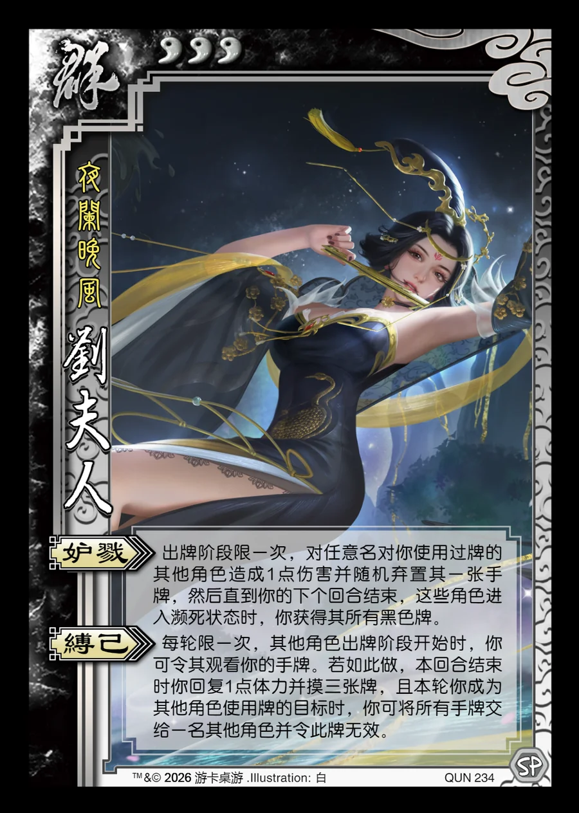

点击卡面查看大图
群
刘夫人
♥3夜阑晚风
妒戮
出牌阶段限一次，对任意名对你使用过牌的其他角色造成1点伤害并随机弃置其一张手牌，然后直到你的下个回合结束，这些角色进入濒死状态时，你获得其所有黑色牌。
缚己
每轮限一次，其他角色出牌阶段开始时，你可令其观看你的手牌。若如此做，本回合结束时你回复1点体力并摸三张牌，且本轮你成为其他角色使用牌的目标时，你可将所有手牌交给一名其他角色并令此牌无效。

点击卡面查看大图
夜阑晚风
出牌阶段限一次，对任意名对你使用过牌的其他角色造成1点伤害并随机弃置其一张手牌，然后直到你的下个回合结束，这些角色进入濒死状态时，你获得其所有黑色牌。
每轮限一次，其他角色出牌阶段开始时，你可令其观看你的手牌。若如此做，本回合结束时你回复1点体力并摸三张牌，且本轮你成为其他角色使用牌的目标时，你可将所有手牌交给一名其他角色并令此牌无效。